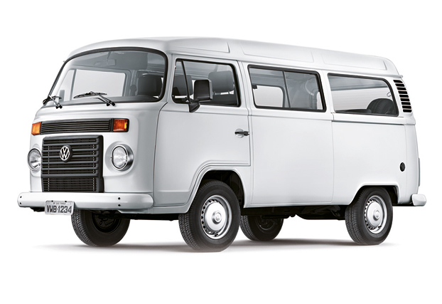

MENU LATERAL
Para os apaixonados por Kombi
A Volkswagen Kombi foi um automóvel utilitário produzido pela empresa automotiva alemã Volkswagen, entre 1950 e 2013. Por força de um decreto, os carros a partir de 2014, deveriam ser dotados de freio tipo ABS e possuir air-bag frontal duplo (para o condutor e passageiro do banco dianteiro). No Brasil, foi fabricada ininterruptamente entre 2 de setembro de 1957 e 18 de setembro de 2013, sendo praticamente o carro mais antigo do país. É considerada a precursora das vans de passageiros e carga.
O nome Kombi vem do alemão Kombinationsfahrzeug que quer dizer "veículo combinado" (ou "veículo multi-uso", em uma tradução mais livre).
Gerações